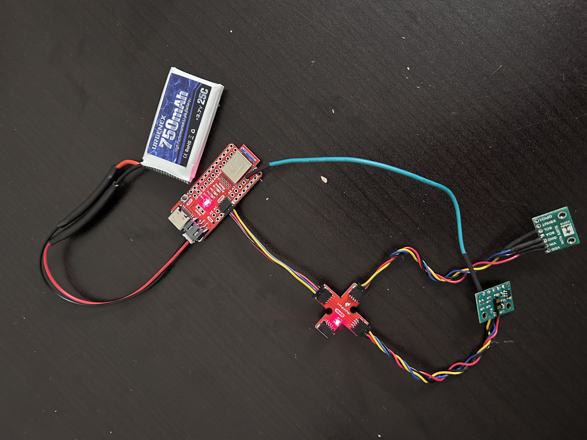

Task 1: Connecting the Artemis/ToF Sensors


The purpose of Lab 3, was to get familiar with the ToF sensor and begin planning the placement of electronics on our cars.
For the prelab I read up on the ToF sensors and began to plan out the positioning of the sensors on the car. I filled up the wiring diagram to plan out where I would place my ToF sensors on my car. We are using 2 ToF sensors that will help us maximize the obstacle detection range of our robot. I had several options for placing the two sensors on my car and therefore used my longer QWIIC connect cables to connect the sensors to the breakout board. Not having any sensors on the sides might lead to the robot missing obstacles in blind spots, while not having a sensor at the back would mean the robot would miss obstacles while backing up. After weighing these two options, I decided to place the two sensors perpendicular to each other- one on the front of the car and the other on the side. With this placement, my car will not be able to detect any obstacles at the back unless turned around.
By default, the two sensors have the same I2C address, which means that only one of them would measure data. To ensure that both sensors measure data, we have to use the XSHUT pin on one of the sensors to manually change its address. We connect the XSHUT pin to pin 6 on our Artemis. Then, in void set-up we manually change the address of this sensor, which ensures that both sensors have a unique address.
To start collecting data with the ToF sensors, we downloaded the SparkFun VL53L1X 4m laser distance sensor library. Then we ran the Example05_wire_I2C.ino code, and saw the Artemis scanning the I2C ports to find the sensor. The address of this sensor was found to be 0x29. In the datasheet for the sensor, the address is listed as 0x52. However, since the rightmost bit is used to identify if data is read/write, it is ignored. Therefore, 0x52 is shifted to the right, resulting in address 0x29.

The ToF sensor library has 3 available sensor modes: short, long and medium (only available with the Polulu VL53L1X Library). Short mode has a maximum range of 1.3 m and is the least sensitive to ambient light. Medium mode has a maximum range of 3m. Long mode has a maximum range of 4m but is the most sensitive to ambient light. The short mode is more accurate and suffers from lesser sensor noise. For this lab, I chose to use the short mode to test sensor accuracy. I modified the code so that the sensor now uses short mode.

Some of the data collected from the sensor:


To test the accuracy of the sensor I collected data for 6 different distance readings ranging from 10 inches to 60 inches. For each distance reading I took 10 data points and then took the mean of those as the final reading. I also calculated the standard deviation of the data for each distance reading.

Python code used to calculate std. dev and mean:

I also found the ranging time, which is the time it takes between sensor measurements. I found this value to be around 89 ms.
Now, I connected both the sensors to the breakout board and ran the code again. I had to make sure to use the XSHUT pin to manually set the address of one of the sensors. I chose to set this value to 0x30. Printing to the serial monitor confirms that the two sensors are collecting data separately.

I now modified the code to run as fast as possible. Some of the changes I made included removing all print statements, only collecting data when the sensors are ready. I also moved the startRanging() and stopRanging() statements outside of the data collection for loop. I then sent back 500 data points from the arduino to the python script and calculated the time taken for this. As a comparison to find the limiting factor, I also recorded the time taken for an empty loop to complete. As can be seen below, the loop in which sensor measurements were recorded took 1365 ms while an empty loop took close to 0 ms(I stored time data as in int). Therefore, the sensor data measurements seems to be the limiting factor for this case.
Finally, we collected IMU and ToF data simultaneosly over bluetooth and plotted the results vs time. The two plots are shown below.

Infrared distance sensors come in several varieties, each with distinct advantages and limitations. Proximity IR sensors use an emitter-receiver pair to detect object presence when the IR beam is interrupted, offering a simple, low-cost solution for applications like garage door safety mechanisms, though they only provide binary detection rather than actual distance measurements. Time-of-Flight (ToF) IR sensors calculate precise distances by measuring how long it takes for emitted IR light to return after bouncing off objects, providing superior accuracy and range but at higher cost and complexity. IR triangulation sensors emit light at an angle and use geometry to determine distance based on where reflected light hits a detector, striking a balance between the simplicity of proximity sensors and the precision of ToF technology, though their accuracy diminishes with increasing distance.
This lab was very useful in getting familiar with working with ToF data. It also helped in reinforcing the different methods of interacting with and sending/receiving data using both our sensors. This will be very useful in future labs where being able to get accurate distance readings of obstacles will be crucial for our robot to safely navigate environments.
I referenced Nila Narayan and Mikayla Lahr's work for Lab 3. Lulu Htutt (lh543) and I used the same hardware set-up for our lab but wrote the software code separately.